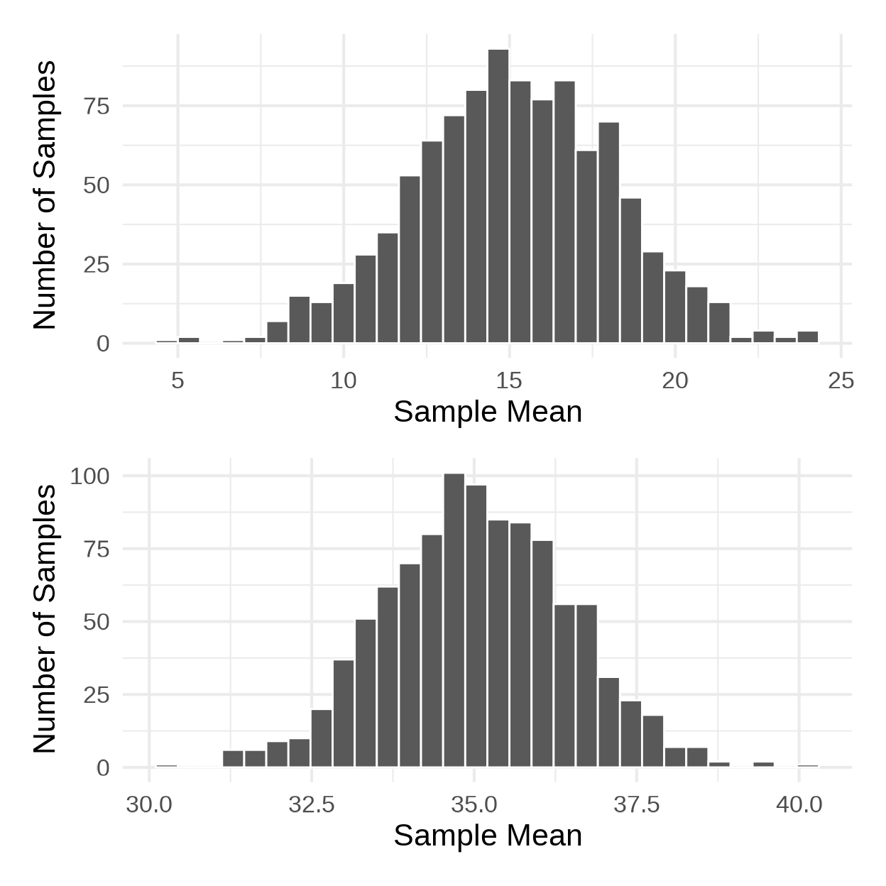
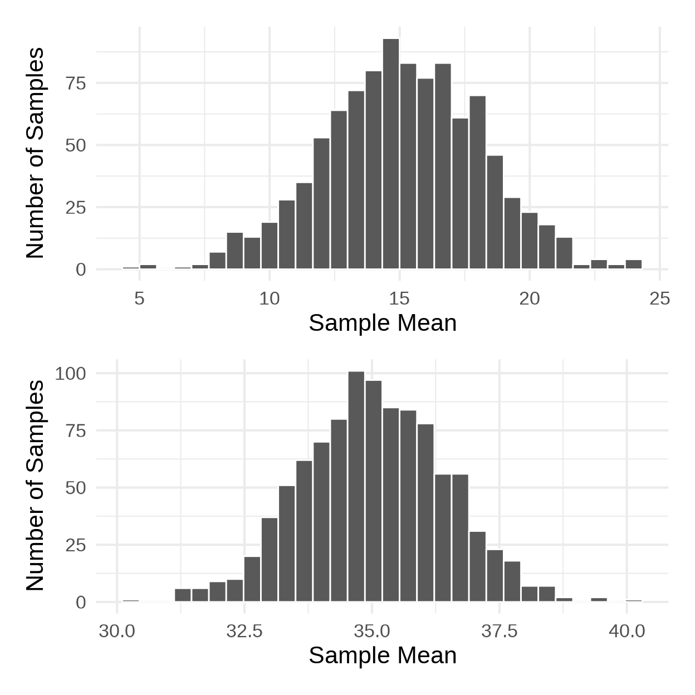
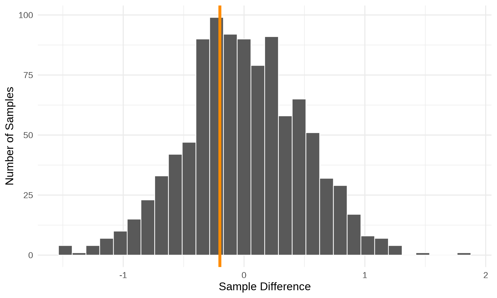
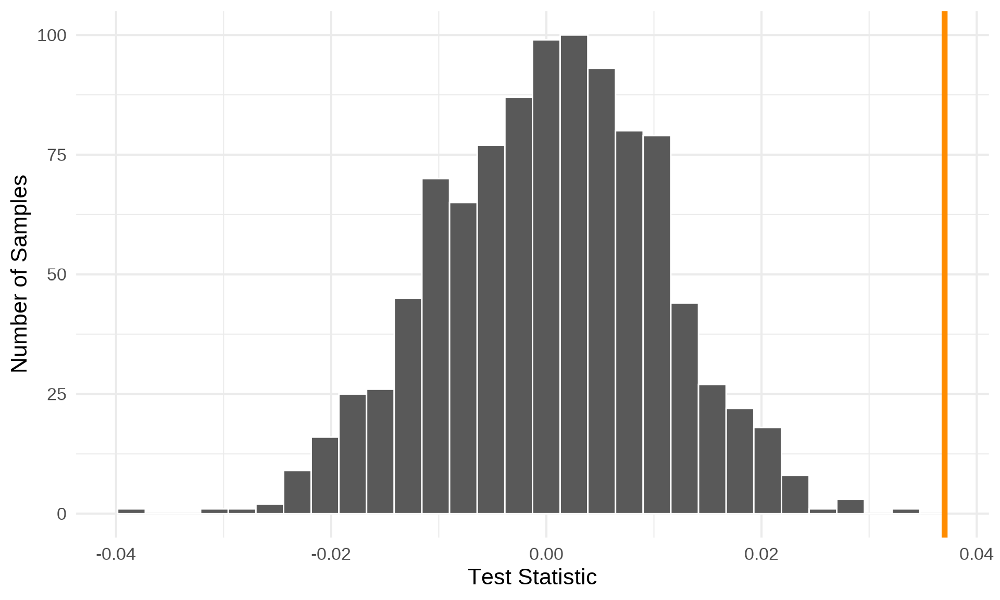

Stat120 | Fall 2025
| Name | Statistic | Parameter |
|---|---|---|
| Mean | \(\bar{y}\) | \(\mu\) |
| Standard Deviation | \(s\) | \(\sigma\) |
| Correlation | \(r\) | \(\rho\) |
| Slope of Regression Line | \(b\) | \(\beta\) |
| Proportion | \(\hat{p}\) | \(p\) |

THE NECESSITY OF TRAINING HANDS FOR FIRST-CLASS FARMS IN THE FATHERLY HANDLING OF FARM LIVESTOCK IS FOREMOST IN THE MINDS OF FARM OWNERS. BECAUSE THE FOREFATHERS OF THE FARM OWNERS TRAINED THE FARM HANDS FOR THE FIRST-CLASS FARMS IN THE FATHERLY HANDLING OF FARM LIVESTOCK, THE OWNERS OF THE FARMS FEEL THEY SHOULD CARRY ON WITH THE FAMILY TRADITION OF TRAINING FARM HANDS IN THE FATHERLY HANDLING OF FARM LIVESTOCK BECAUSE OF THEIR BELIEF THAT IT IS THE BASIS FOR GOOD FUNDAMENTAL FARMING.
THE NECESSITY OF TRAINING HANDS FOR FIRST-CLASS FARMS IN THE FATHERLY HANDLING OF FARM LIVESTOCK IS FOREMOST IN THE MINDS OF FARM OWNERS. BECAUSE THE FOREFATHERS OF THE FARM OWNERS TRAINED THE FARM HANDS FOR THE FIRST-CLASS FARMS IN THE FATHERLY HANDLING OF FARM LIVESTOCK, THE OWNERS OF THE FARMS FEEL THEY SHOULD CARRY ON WITH THE FAMILY TRADITION OF TRAINING FARM HANDS IN THE FATHERLY HANDLING OF FARM LIVESTOCK BECAUSE OF THEIR BELIEF THAT IT IS THE BASIS FOR GOOD FUNDAMENTAL FARMING.
Hypothesis testing is the “backbone” of science and allows us to make claims about population parameters based on sample statistics.
Null hypothesis
Model that we temporarily adopt to see how consistent our data is with the model. Should be about population parameters and usually claims no effect or difference
Alternative hypothesis
Usually the claim that we are trying to support with our data. Not equal to a specific value, but usually greater than (>) less than (<) or not equal to (\(\ne\))
In a random sample of 765 adults in the United States, 322 say they could not cover a $400 unexpected expense without borrowing money or going into debt. A journalist claims that this is evidence that the overall proportion could be 50%. Is the journalist justified?
The National Center of Education Statistics conducted a survey of high school seniors. In a simple random sample of 200 students from this survey, the mean writing score was 47.9 and the mean reading score was 48.1 We are interested in seeing whether there is a difference in the average writing and reading score.
In a study about Universal Basic Income, the (SEED) randomly selected 100 residents and gave them an unrestricted $500 a month for 24 months. At the end of the study period, they were given an emotional well-being assessment and results were compared to 100 control-group residents who did not receive payments. The average well-being score among the UBI group was 31.3 and among the control group was 29.6.
A public health researcher believes that there is a positive relationship between heart rate and age among ICU patients. Data from 23 patients gives \(r = 0.037\).
In a pre-Musk Pew Research Poll on social media use, 72% of Twitter users (n = 346) responded that they visited Twitter a few times a week or more. Among Instagram users (n = 530), this number was 80%. Is there a difference in frequency of use between Twitter and Instagram users?